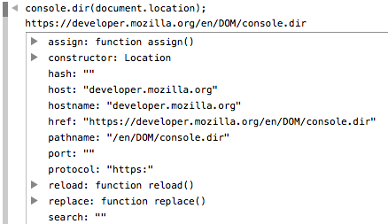

Non-standard
This feature is non-standard and is not on a standards track. Do not use it on production sites facing the Web: it will not work for every user. There may also be large incompatibilities between implementations and the behavior may change in the future.
Displays an interactive list of the properties of the specified JavaScript object. The output is presented as a hierarchical listing with disclosure triangles that let you see the contents of child objects.
Note: This feature is available in Web Workers.

Syntax
console.dir(object);
Parameters
object- A JavaScript object whose properties should be output.
Specifications
| Specification | Status | Comment |
|---|---|---|
| Console API The definition of 'console.dir()' in that specification. |
Editor's Draft | Initial definition |
Browser compatibility
| Feature | Chrome | Firefox (Gecko) | Internet Explorer | Opera | Safari |
|---|---|---|---|---|---|
| Basic support | (Yes) | 8.0 (8.0) | 9 | (Yes) | (Yes) |
| Available in workers | ? | 38.0 (38.0) | ? | ? | ? |
| Feature | Android | Firefox Mobile (Gecko) | IE Mobile | Opera Mobile | Safari Mobile |
|---|---|---|---|---|---|
| Basic support | ? | 8.0 (8.0) | ? | ? | ? |
| Available in workers | ? | 38.0 (38.0) | ? | ? | ? |
See also
Document Tags and Contributors
Tags:
Contributors to this page: Sebastianz, chrisdavidmills, cvrebert, teoli, kscarfone, Shraddha_Magdum, Sheppy, myakura, ziyunfei, alanh
Last updated by:
Sebastianz,